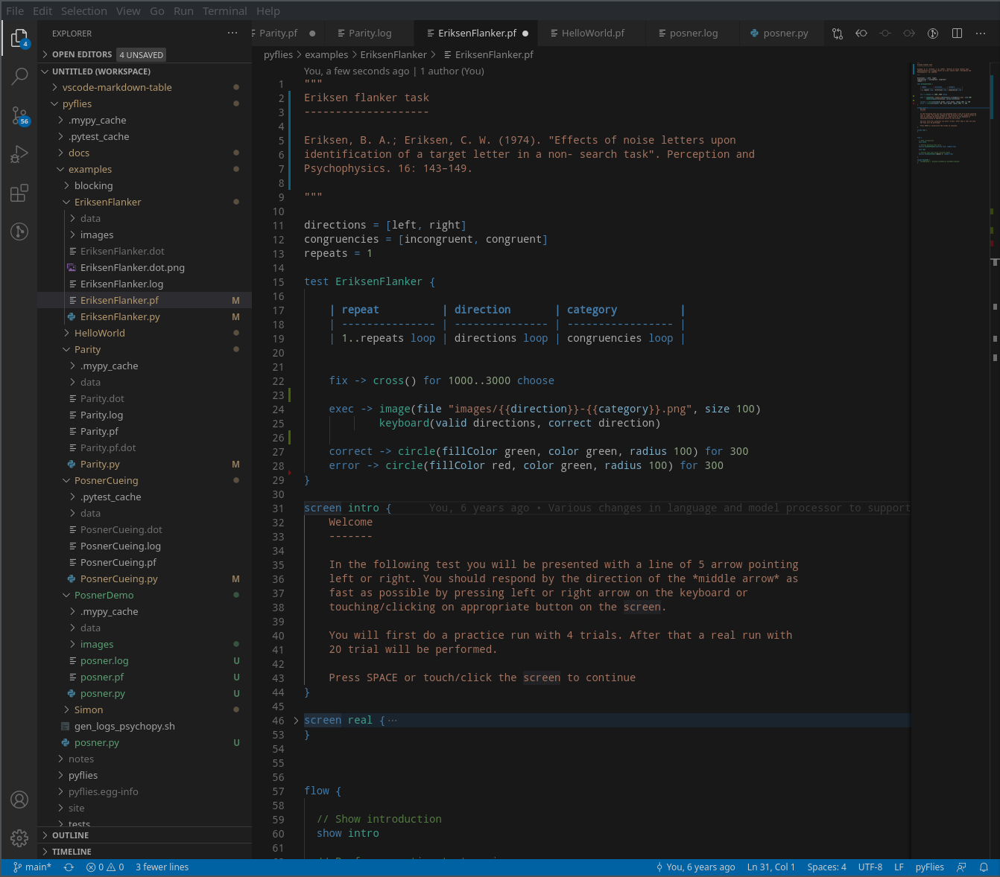

Uvod u jezike specifične za domen
Prof. dr Igor Dejanović (igord at uns ac rs)
Kreirano 2020-03-23 Mon 16:11, pritisni ESC za mapu, m za meni, Ctrl+Shift+F za pretragu
1 Jezici specifični za domen
1.1 Jezici specifični za domen - JSD (Domain-Specific Languages - DSL)
- Jezici specifični za domen (JSD, eng. Domain-Specific Languages - DSL) su jezici prilagođeni i ograničeni na određeni domen problema.
- Za razliku od jezika opšte namene (JON, eng. General Purpose Language - GPL), nude povećanje ekspresivnosti kroz upotrebu koncepata i notacija prilagođenih domenu problema i domenskim ekspertima.
- Nazivaju se još i mali jezici (eng. little languages).
- Uspešan JSD je fokusiran na uzak, dobro definisan domen i pokriva ga na odgovarajući način.
- Domen često ima svoj jezik korišćen od strane domenskih eksperata iako ne postoji njegova implementacija na računaru.
2 Primeri JSD
2.1 SQL
SELECT player, stadium
FROM game JOIN goal ON (id=matchid)
2.2 JPA mapiranje
@Entity
@Table(name="COURSES")
public class Course {
private long courseId;
private String courseName;
public Course() {
}
public Course(String courseName) {
this.courseName = courseName;
}
@Id
@GeneratedValue
@Column(name="COURSE_ID")
public long getCourseId() {
return this.courseId;
}
}
2.3 Build jezici (Ant/Maven/Gradle)

2.4 Poslovni procesi - BPMN

2.5 Mobilne aplikacije

2.6 Ali i…

2.7 ili…

3 Prednosti upotrebe
3.1 Uticaj na produktivnost
- Pojedine studije pokazuju da povećanje produktivnosti ide i do 1000%1.
- Šta je osnovni razlog za povećanje produktivnosti?
3.2 Problem mentalnog mapiranja

3.3 Rešenje upotrebom JSD

3.4 Zašto JSD?
- JSD su koncizniji od jezika opšte namene što omogućava korisnicima da jasnije iskažu svoju nameru.
- JSD sintaksa, bilo tekstualna ili grafička, može se prilagoditi i približiti domenskim ekspertima.
- Koncepti korišćeni u JSD su koncepti problemskog (poslovnog) domena što pod određenim uslovima omogućava da domenski eksperti direktno koriste JSD bez posredovanja programera.
- Upotrebom koncepata problemskog domena izbegava se ručno mapiranje na koncepte ciljne implementacione platforme. Taj posao se obavlja automatski upotrebom JSD prevodioca (kompajlera ili generatora koda).
- Iskazivanje rešenja konceptima nezavisnim od korišćene tehnologije rezultuje dužim životnim vekom aplikacije.
- Samodokumentujući jezički iskazi.
4 Arhitekture
4.1 Arhitektura bazirana na prevodiocima
4.2 Arhitektura bazirana na interpreterima

5 Tehnologije za parsiranje
5.1 Tehnologije za parsiranje
- Arpeggio
- parglare
- textX
5.2 Arpeggio
- 100% Python kod
- MIT licenca
- Definisanje gramatike putem Python izraza ili putem PEG notacije
- Puna podrška za semantičku analizu
- Dobra podrška za debagovanje
- Vizualizacija stabla parsiranja i modela parsera upotrebom GraphViz biblioteke.
- Dobra prijava grešaka
- Mogućnost višestruke analize istog stabla parsiranja
- http://textx.github.io/Arpeggio/
5.3 Arpeggio

5.4 parglare
- 100% Python kod
- Najmlađi projekat od sva tri - Jan. 2017.
- LR(1)/GLR parser.
- Gramatika se zadaje tekstualnim DSL-om.
- Podrška za asocijativnost i prioritet.
- Podrška za upravljanje white-space i komentarima.
5.5 parglare primer
from parglare import Parser, Grammar
grammar = r"""
E: E '+' E {left, 1}
| E '-' E {left, 1}
| E '*' E {left, 2}
| E '/' E {left, 2}
| E '^' E {right, 3}
| '(' E ')'
| number;
terminals
number: /\d+(\.\d+)?/;
"""
actions = {
"E": [lambda _, n: n[0] + n[2],
lambda _, n: n[0] - n[2],
lambda _, n: n[0] * n[2],
lambda _, n: n[0] / n[2],
lambda _, n: n[0] ** n[2],
lambda _, n: n[1],
lambda _, n: n[0]],
"number": lambda _, value: float(value),
}
g = Grammar.from_string(grammar)
parser = Parser(g, actions=actions)
result = parser.parse("34 + 4.6 / 2 * 4^2^2 + 78")
print("Result = ", result)
Result = 700.8
5.6 textX
- 100% Python kod
- MIT licenca
- Istovremeno definisanje gramatike i meta-modela - inspirisan Xtext
- Automatska konstrukcija modela - podrška za razrešavane referenci
- Podrška za veze tipa celina-deo
- Kontrola parsiranja (whitespaces, case, keywords…)
- Postprocesiranje objekata modela ili celog modela
- Modularizacija gramatika - import
- Vizualizacija modela i meta-modela
- Najpopularniji alat od sva tri.
- Dokumentacija i tutorijali dostupni na https://textx.github.io/textX/
5.7 textX

6 Primeri upotrebe
6.1 pyFlies - DSL za kognitivne eksperimente

6.2 pyFlies - DSL za kognitivne eksperimente

6.3 pyTabs - DSL za gitarske tablature

6.4 Energetska elektronika
Specifikacija komponenti i šema.
6.5 Analiza legacy koda
7 textX
Prati textX link